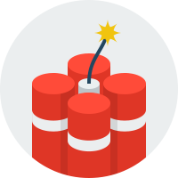
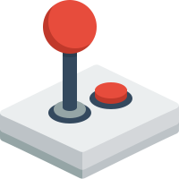

<div class="content1">
    <h1>
        <span>Track Ads,</span> 
        <span>Sales & Leads.</span><br>
        <span>Amazing</span>
        <span>analytic</span>
        <span> & reporting</span>
        <span>tools</span>
        <span> for </span>
        <span>all</span>
        <span>levels.</span> 
    </h1>     
 </div><br><br><br>
<!--<section class="section1 inline">
    <div>
        
       <a><h2>LINK CLOAKING</h2></a>
       <a>         Cloak your affiliate links,<br> 
                   capitalize on viral marketing<br> 
                   to drive boatloads of traffic<br>    
                   from social media sites</a>
    </div>
    <div class="section1">
                
    </div>
</section> -->
<section class="section1">
    <div class="row">
        <div class="col">
            <h2>Link Cloaking</h2>
            <a>         Cloak your affiliate links,<br> 
                        capitalize on viral marketing<br> 
                        to drive boatloads of traffic<br>    
                        from social media sites<br>
            </a><br>
            <button class="btn btn-info" [routerLink]="['/afflicateloak']">Learn More</button>
        </div>
        <div class="col">
            <a><h2>Ad Tracking</h2></a>
            <a>         Create campaigns to track ads from banners,<br> 
                        emails, ad swaps, blog posts and much more.<br>
                        Add ad costs to get ROI reports.
            </a><br><br><br>
            <button class="btn btn-info" [routerLink]="['/adtracking']">Learn More</button>
        </div>
        <div class="col">
            <a><h2>PPC Tracking</h2></a>
            <a>
                    Centralize your PPC campaigns.<br>
                    Make sense of AdWords & FaceBook ads.<br>
                    Discover which keywords make money,<br> 
                    and which ads to improve.
            </a><br><br>
            <button class="btn btn-info" [routerLink]="['ppctracking']">Learn More</button>
        </div>
    </div><br><br><br>
</section>
<section class="lineUp">    
    <div class="row">
        <div class="col">
            <a><h2>Conversion Tracking</h2></a>
            <a>         Tracking multiple sales and leads throughout <br>
                        your entire funnel and multiple domains using<br>
                         our iFrame & Javascript conversion tracking.<br>
            </a><br><br>
            <button class="btn btn-info" [routerLink]="['/conversiontracking']">Learn More</button>
        </div>
        <div class="col">
            <a><h2>Pixel Tracking</h2></a>
            <a> Track conversions on your own site or blog,<br>
                as well as affiliate networks, using our<br> 
                simple but effective pixel tracking solution.<br>       
            </a><br><br>
            <button class="btn btn-info" [routerLink]="['pixeltracking']">Learn More</button>
        </div>
        <div class="col">
            <a><h2>Postback Tracking</h2></a>
            <a>
                    Centralize your PPC campaigns.<br>
                    Make sense of AdWords & FaceBook ads.<br>
                    Discover which keywords make money,<br> 
                    and which ads to improve.
            </a><br><br>
            <button class="btn btn-info" [routerLink]="['/postbacktracking']">Learn More</button>
        </div>
    </div>
</section>